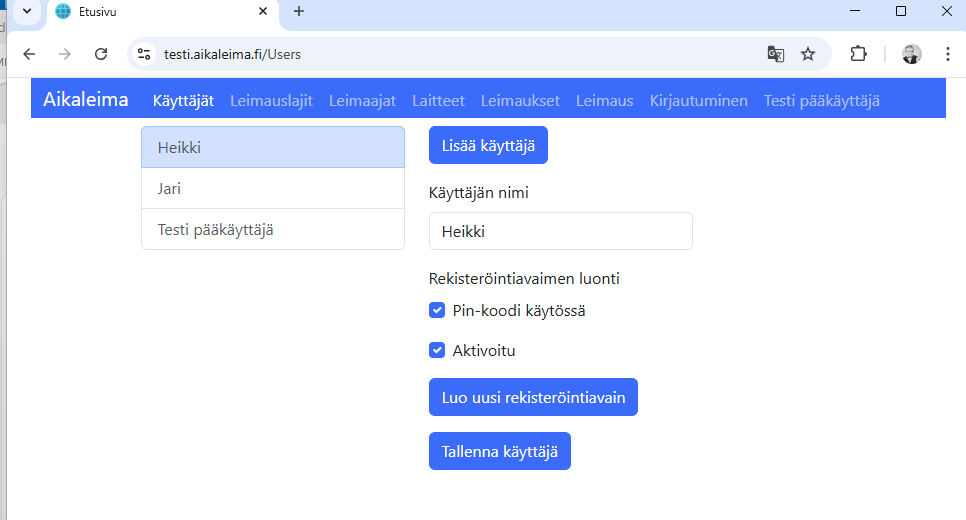

Administration
 When the application starts, it asks you to log in on the first use. The login ID is "testi" in the test environment
and a customer-specific ID in the production environment. The login function allows access to customer data maintenance on the device.
The login key is single-use and is entered on the login screen. Logging in activates the ID and identifies the device.
In the future, the program will use its own internal method to identify data transfer between the browser and the server. There is no logout from the application,
so the browser session remains logged in. If the application does not work and re-login is required,
the user must request the ID to be unlocked according to the customer's agreed practice.
With the login key creation function, the ID can be used to log in again on the same or another device.
The login ID is tied to the browser or device. The same ID cannot be activated for another browser or device for simultaneous use;
each browser or device requires its own ID.
When the application starts, it asks you to log in on the first use. The login ID is "testi" in the test environment
and a customer-specific ID in the production environment. The login function allows access to customer data maintenance on the device.
The login key is single-use and is entered on the login screen. Logging in activates the ID and identifies the device.
In the future, the program will use its own internal method to identify data transfer between the browser and the server. There is no logout from the application,
so the browser session remains logged in. If the application does not work and re-login is required,
the user must request the ID to be unlocked according to the customer's agreed practice.
With the login key creation function, the ID can be used to log in again on the same or another device.
The login ID is tied to the browser or device. The same ID cannot be activated for another browser or device for simultaneous use;
each browser or device requires its own ID.
Home Page
 After logging in, the home page opens. The home page has links to different functions. The functions are described below. The goal is to add statistics on stampings
and an error log display to the home page in the future.
After logging in, the home page opens. The home page has links to different functions. The functions are described below. The goal is to add statistics on stampings
and an error log display to the home page in the future.
Users

The user screen is used to maintain the information of the customer's timestamp service administrators. Typically 1–2 people who log in to the service from their own workstations.
A PIN code can be set per user to protect the login. The user enters their desired PIN code on the first login, and it is saved on the server.
In the future, when the application starts, the program logs in with the login key in the browser's IndexedDB, and if the login is successful, the program will also ask for the user's PIN code to ensure that the correct user is logging in.
Stamping Types
 Stamping types contain a name and a key related to the stamping information according to the customer's systems. This allows the stamping event to be identified when transferring data to customer systems.
Stamping types contain a name and a key related to the stamping information according to the customer's systems. This allows the stamping event to be identified when transferring data to customer systems.
Stampers
 Stampers contain a name and a key related to the stamper according to the customer's systems. This allows the stamping event to be identified when transferring data to customer systems.
Stampers contain a name and a key related to the stamper according to the customer's systems. This allows the stamping event to be identified when transferring data to customer systems.
Devices
Devices contain a unique name. A device can be personal, such as a phone application, in which case the device is linked to the information in the stamper data.
A device can be a public stamping terminal, in which case the stamper must enter a personal key during the stamping event to assign it. The device's time information is used as the basis for the stamp.
The GPS setting can also be turned on for the device, in which case the coordinates are also saved with the stamp. The program asks for permission to use location data the first time in the browser and on the phone.
Stamps
 The list shows the location data and, as an example, a link to Google Maps. As you can see from the picture, the location provided by the browser is not accurate, but the phone's GPS data is.
The list shows the location data and, as an example, a link to Google Maps. As you can see from the picture, the location provided by the browser is not accurate, but the phone's GPS data is.
Stamping
Stamping can also be done with the application. However, you must then log in with a stamping ID, which is different from the administration ID.
If the device is a public stamping terminal, the stamper must enter a personal key to assign the stamping event. With suitable accessories,
a barcode reader can also be used, for example, to read a barcode from an ID card, or an RFID reader to identify the stamper from a chip.